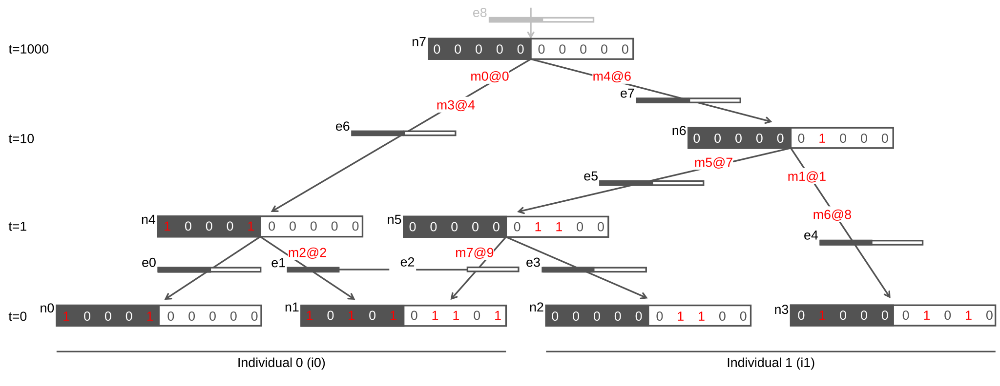
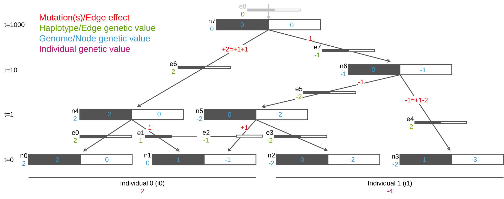

Individual, node, and edge genetic values#
In line with the tree sequence data model, this page describes relationships between individual, node, and edge genetic values, and underlying edge effects arising from mutations.
Learning Objectives
After this page, you will be able to:
Understand how to obtain genetic values in tstrait for individuals, nodes, and edges
Understand how causal-allele effects give rise to edge effects and the genetic values.
Algorithm Overview#
The tstrait algorithm for individuals’ genetic values can also be used to compute node and edge genetic values, and there is the related concept of edge effects; all following the assumed quantitative genetics model. These quantities are related as follows:
edge effect is the sum of effects of causal alleles introduced on the edge by mutations.
edge “genetic” value is its edge effect plus a sum of edge effects ancestral to the edge.
node “genetic” value is a sum of “genetic” values of immediately ancestral edges into the node.
individual genetic value is a sum of “genetic” values of nodes of the individual.
Above we have quoted the term “genetic” when referring to nodes and edges, because the term “genetic value” is usually used with individuals. Since individuals’ genetic value is a sum over the contributions of its nodes, the term “genetic value” applies also to nodes, and hence also to immediately ancestral edges of the nodes.
More on terminology. Edges are also called branches or haplotypes, so we can call edge effect as branch effect or haplotype effect and edge genetic value as branch genetic value or haplotype genetic value.
Example#
We will demonstrate the concepts of edge effects and
edge, node, and individual genetic values with
a tiny example so we can follow the calculations.
Tree sequence for the example is shown in the following figure.
It represents two diploid individuals and how their four genomes (nodes)
are connected with edges to four ancestral nodes and eight mutation events.
Mutation events and their downstream effects of allele change from ancestral state
are denoted with a red colour.
One node is a recombinant,
meaning that this tree sequence has two local trees.
We denote the first (second) local tree by shading the nodes’ first (second) region with black (white) colour.
To help tracking IDs across the different elements of a tree sequence
in the following text, we prepend a letter to the zero-based IDs
(iI for individual I, nN for node N, eE for edge E, and mM@S for mutation M at site S).
{kind=link}

Fig. 1 Diagram of a tree sequence with two individuals (i0 and i1), eight nodes (n0-n7; n0-n3 are sample nodes and n4-n7 are ancestral nodes), eight edges (e0-e7; with a “virtual” root edge e8), eight mutations (m0-m7 [each at a different site]; in red colour), and resulting node alleles across ten sites. The first (second) local tree is denoted with black (white) colour.#
We now create tables for the example and combined them into a tree sequence object:
import io
import tskit
import tstrait
import pandas as pd
individuals = io.StringIO(
"""\
flags location parents
0 0 -1
0 0 -1
"""
)
nodes = io.StringIO(
"""\
id is_sample time individual
0 1 0 0
1 1 0 0
2 1 0 1
3 1 0 1
4 0 1 -1
5 0 1 -1
6 0 10 -1
7 0 1000 -1
"""
)
edges = io.StringIO(
"""\
left right parent child
0 10 4 0
0 5 4 1
5 10 5 1
0 10 5 2
0 10 6 3
0 10 6 5
0 10 7 4
0 10 7 6
"""
)
sites = io.StringIO(
"""\
position ancestral_state
0 0
1 0
2 0
3 0
4 0
5 0
6 0
7 0
8 0
9 0
"""
)
mutations = io.StringIO(
"""\
site node time derived_state parent
0 4 750.0 1 -1
1 3 7.0 1 -1
2 1 0.5 1 -1
4 4 500.0 1 -1
6 6 600.0 1 -1
7 5 9.0 1 -1
8 3 2.0 1 -1
9 1 0.5 1 -1
"""
)
ts = tskit.load_text(individuals = individuals,
nodes = nodes,
edges = edges,
sites = sites,
mutations = mutations,
strict = False)
print(ts)
╔═══════════════════════╗
║TreeSequence ║
╠═══════════════╤═══════╣
║Trees │ 2║
╟───────────────┼───────╢
║Sequence Length│ 10║
╟───────────────┼───────╢
║Time Units │unknown║
╟───────────────┼───────╢
║Sample Nodes │ 4║
╟───────────────┼───────╢
║Total Size │1.3 KiB║
╚═══════════════╧═══════╝
╔═══════════╤════╤═════════╤════════════╗
║Table │Rows│Size │Has Metadata║
╠═══════════╪════╪═════════╪════════════╣
║Edges │ 8│264 Bytes│ No║
╟───────────┼────┼─────────┼────────────╢
║Individuals│ 2│104 Bytes│ No║
╟───────────┼────┼─────────┼────────────╢
║Migrations │ 0│ 8 Bytes│ No║
╟───────────┼────┼─────────┼────────────╢
║Mutations │ 8│312 Bytes│ No║
╟───────────┼────┼─────────┼────────────╢
║Nodes │ 8│232 Bytes│ No║
╟───────────┼────┼─────────┼────────────╢
║Populations│ 0│ 8 Bytes│ No║
╟───────────┼────┼─────────┼────────────╢
║Provenances│ 0│ 16 Bytes│ No║
╟───────────┼────┼─────────┼────────────╢
║Sites │ 10│266 Bytes│ No║
╚═══════════╧════╧═════════╧════════════╝
We can inspect the tables in the tree sequence and IDs of its elements using:
print(ts.tables.individuals)
print(ts.tables.nodes)
print(ts.tables.edges)
print(ts.tables.sites)
print(ts.tables.mutations)
╔══╤═════╤════════╤═══════╤════════╗
║id│flags│location│parents│metadata║
╠══╪═════╪════════╪═══════╪════════╣
║0 │ 0│ 0.0│ -1│ ║
║1 │ 0│ 0.0│ -1│ ║
╚══╧═════╧════════╧═══════╧════════╝
╔══╤═════╤═════╤══════════╤══════════╤════════╗
║id│time │flags│population│individual│metadata║
╠══╪═════╪═════╪══════════╪══════════╪════════╣
║0 │ 0│ 1│ -1│ 0│ ║
║1 │ 0│ 1│ -1│ 0│ ║
║2 │ 0│ 1│ -1│ 1│ ║
║3 │ 0│ 1│ -1│ 1│ ║
║4 │ 1│ 0│ -1│ -1│ ║
║5 │ 1│ 0│ -1│ -1│ ║
║6 │ 10│ 0│ -1│ -1│ ║
║7 │1,000│ 0│ -1│ -1│ ║
╚══╧═════╧═════╧══════════╧══════════╧════════╝
╔══╤════╤═════╤══════╤═════╤════════╗
║id│left│right│parent│child│metadata║
╠══╪════╪═════╪══════╪═════╪════════╣
║0 │ 0│ 10│ 4│ 0│ ║
║1 │ 0│ 5│ 4│ 1│ ║
║2 │ 5│ 10│ 5│ 1│ ║
║3 │ 0│ 10│ 5│ 2│ ║
║4 │ 0│ 10│ 6│ 3│ ║
║5 │ 0│ 10│ 6│ 5│ ║
║6 │ 0│ 10│ 7│ 4│ ║
║7 │ 0│ 10│ 7│ 6│ ║
╚══╧════╧═════╧══════╧═════╧════════╝
╔══╤════════╤═══════════════╤════════╗
║id│position│ancestral_state│metadata║
╠══╪════════╪═══════════════╪════════╣
║0 │ 0│ 0│ ║
║1 │ 1│ 0│ ║
║2 │ 2│ 0│ ║
║3 │ 3│ 0│ ║
║4 │ 4│ 0│ ║
║5 │ 5│ 0│ ║
║6 │ 6│ 0│ ║
║7 │ 7│ 0│ ║
║8 │ 8│ 0│ ║
║9 │ 9│ 0│ ║
╚══╧════════╧═══════════════╧════════╝
╔══╤════╤════╤════════════╤═════════════╤══════╤════════╗
║id│site│node│time │derived_state│parent│metadata║
╠══╪════╪════╪════════════╪═════════════╪══════╪════════╣
║0 │ 0│ 4│750.00000000│ 1│ -1│ ║
║1 │ 1│ 3│ 7.00000000│ 1│ -1│ ║
║2 │ 2│ 1│ 0.50000000│ 1│ -1│ ║
║3 │ 4│ 4│500.00000000│ 1│ -1│ ║
║4 │ 6│ 6│600.00000000│ 1│ -1│ ║
║5 │ 7│ 5│ 9.00000000│ 1│ -1│ ║
║6 │ 8│ 3│ 2.00000000│ 1│ -1│ ║
║7 │ 9│ 1│ 0.50000000│ 1│ -1│ ║
╚══╧════╧════╧════════════╧═════════════╧══════╧════════╝
The resulting alleles across ten sites for the four sample nodes are:
ts.genotype_matrix().T
array([[1, 0, 0, 0, 1, 0, 0, 0, 0, 0],
[1, 0, 1, 0, 1, 0, 1, 1, 0, 1],
[0, 0, 0, 0, 0, 0, 1, 1, 0, 0],
[0, 1, 0, 0, 0, 0, 1, 0, 1, 0]], dtype=int32)
We now create a data frame with trait information: causal site, effect, trait, and allele. In this example all eight polymorphic sites are causal sites.
data = {"site_id": [ 0, 1, 2, 4, 6, 7, 8, 9],
"effect_size": [ 1, 1, -1, 1, -1, -1, -2, 1],
"trait_id": [ 0, 0, 0, 0, 0, 0, 0, 0],
"causal_allele": ["1", "1", "1", "1", "1", "1", "1", "1"]}
trait_df = pd.DataFrame(data)
print(trait_df)
site_id effect_size trait_id causal_allele
0 0 1 0 1
1 1 1 0 1
2 2 -1 0 1
3 4 1 0 1
4 6 -1 0 1
5 7 -1 0 1
6 8 -2 0 1
7 9 1 0 1
Combining the tree sequence and trait information generates the edge effects, edge genetic values, node genetic values, and individuals’ genetic values as shown in the figure below. We will now demonstrate how these values are generated from the tree sequence and trait information.
{kind=link}

Fig. 2 Diagram of the tree sequence with mutation effects generating edge effects (both in red colour), which in turn generate edge genetic values (in green colour), node genetic values (in blue colour), and individuals’ genetic values (in purple colour).#
We obtain edge effects by using the edge_effect() function:
edge_effect_df = tstrait.edge_effect(ts, trait_df)
print(edge_effect_df)
trait_id edge_id effect_size
0 0 0 0.0
1 0 1 -1.0
2 0 2 1.0
3 0 3 0.0
4 0 4 -1.0
5 0 5 -1.0
6 0 6 2.0
7 0 7 -1.0
For example, on edge 6, connecting the parent node 7 and child node 4,
mutation 0 at site 0 and mutation 3 at site 4 introduce causal alleles,
each with effect 1 unit, so the joint edge effect is 1 + 1 = 2 units.
Edge 0, connecting the parent node 4 and child node 0,
has no mutations, so its edge effect is 0 units.
We obtain edge genetic values by using the level="edge" argument
of the genetic_value() function:
edge_value_df = tstrait.genetic_value(ts, trait_df, level="edge")
print(edge_value_df)
trait_id edge_id genetic_value
0 0 0 2.0
1 0 1 1.0
2 0 2 -1.0
3 0 3 -2.0
4 0 4 -2.0
5 0 5 -2.0
6 0 6 2.0
7 0 7 -1.0
For example, above we saw that edge 6 has an effect of 2 units and
since the root node 7 has no causal alleles it’s genetic value is 0 units,
so edge 6 has genetic value of 0 + 2 = 2 units.
Note that both mutations on edge 6 are in interval [0,5).
This means that when this interval is passed to node 1 via node 4,
edge 1 inherits genetic value of 2 units,
but it’s effect of -1 unit changes its genetic value to 2 + (-1) = 1 unit.
We obtain node genetic values by using the level="node" argument
of the genetic_value() function:
node_value_df = tstrait.genetic_value(ts, trait_df, level="node")
print(node_value_df)
trait_id node_id genetic_value
0 0 0 2.0
1 0 1 0.0
2 0 2 -2.0
3 0 3 -2.0
4 0 4 2.0
5 0 5 -2.0
6 0 6 -1.0
7 0 7 0.0
For example, above we saw that the root node 7 has genetic value of 0 units
and that mutations on edge 6 changed it to 2 units for node 4 and
consequently for node 0 (since there were no causal mutations on edge 0).
Note that node 1 is recombinant:
it inherits
edge 1 from node 4 over [0, 5), with genetic value of 1 unit and
edge 2 from node 5 over [5, 10), with genetic value of -1 unit.
Node 1 genetic value is therefore 1 + (-1) = 0 units.
We obtain individual genetic values by using the level="individual" argument
of the genetic_value() function, which is the default level:
individual_value_df = tstrait.genetic_value(ts, trait_df)
print(individual_value_df)
trait_id individual_id genetic_value
0 0 0 2.0
1 0 1 -4.0
Individual 0 has nodes 0 and 1, so its genetic value is 2 + 0 = 2 units.
Individual 1 has nodes 2 and 3, so its genetic value is -2 + (-2) = -4 units.